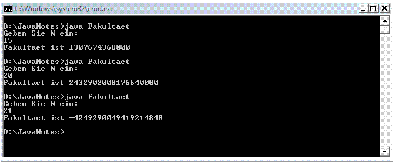

Antwort:
Das vollständige Programm steht unten.
Das vollständige Programm steht unten.
Dieses Programm ist geeignet zum Kopieren in einen Editor und zum Kompilieren und Ausführen auf die übliche Weise. Das menschliche Gehirn lernt am besten, wenn es sieht wie die Dinge passieren. Führen Sie das Programm aus.
import java.util.Scanner;
// Der Anwender gibt Integer N ein.
// Das Programm berechnet N Fakultät.
class Fakultaet
{
public static void main (String[] args )
{
Scanner scan = new Scanner( System.in );
long n, fakultaet = 1;
System.out.println( "Geben Sie N ein:" );
n = scan.nextLong();
if ( n >= 0 )
{
while ( n > 1 )
{
fakultaet = fakultaet * n;
n = n - 1;
}
System.out.println( "Fakultaet ist " + fakultaet );
}
else
{
System.out.println("N muss 0 oder groesser sein");
}
}
}
Hier sind ein paar Programmläufe. Es ist erstaunlich wie schnell Fakultäten riesig werden.

Warnung! Fakultäten werden sehr schnell so groß, dass 20!
die größte Faktultät ist, die dieses Programm berechnen kann.
Dennoch wird das Programm Ihnen eine Antwort für N größer 20 geben.
Aber die Antwort wird falsch sein.
Der Grund dafür ist, dass wenn ein Ergebnis mehr Bits erfordert als eine Variable hat wird sie mit Ausschuss enden.
Dieses Verhalten wird Overflow genannt und ist ein häufiges Problem bei Computern.
Wir wollen den Anwender das falsche Ergebnis nicht sehen lassen, das berechnet wird, wenn N größer 20 ist. Wie kann das Programm geändert werden, um das zu tun?